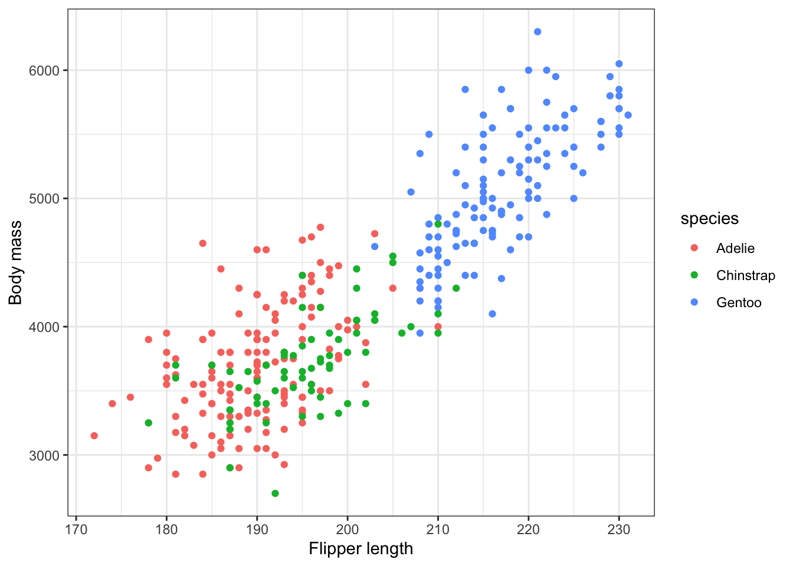
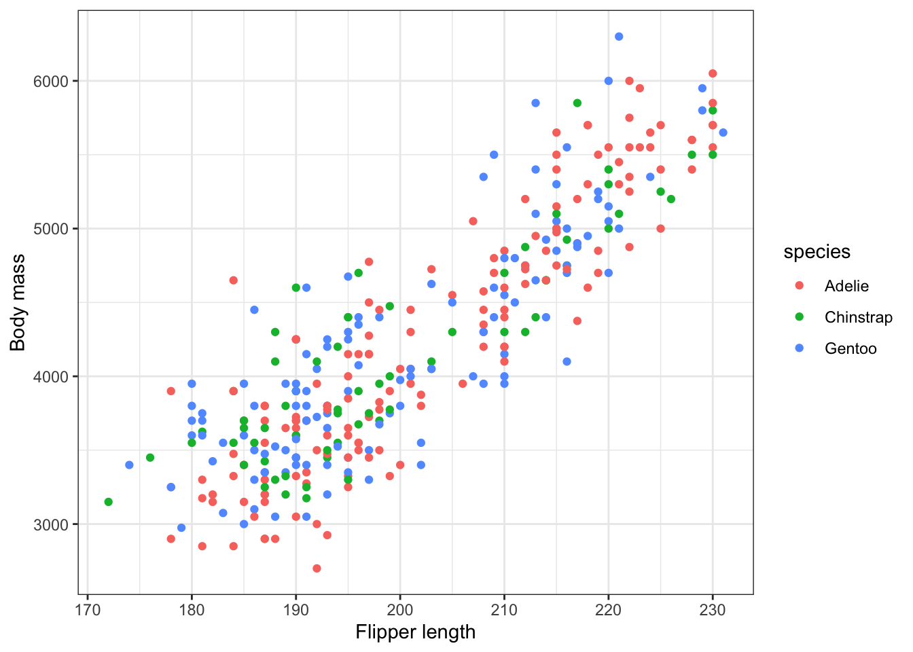

library(palmerpenguins)
library(tidyverse)
penguins |>
ggplot(aes(x = flipper_length_mm, y = body_mass_g, color = species)) +
geom_point() +
labs(x = "Flipper length", y = "Body mass") +
theme_bw()
Instructions:
Suppose we are working with the penguins data, and we fit the model
\[\text{body mass} = \beta_0 + \beta_1 \text{flipper length} + \beta_2 \text{IsChinstrap} + \beta_3 \text{IsGentoo} + \varepsilon\]
The plot below shows the relationship between these variables in the penguins data:
library(palmerpenguins)
library(tidyverse)
penguins |>
ggplot(aes(x = flipper_length_mm, y = body_mass_g, color = species)) +
geom_point() +
labs(x = "Flipper length", y = "Body mass") +
theme_bw()
We wisht to test the hypotheses
\[H_0: \beta_2 = \beta_3 = 0 \hspace{1cm} H_A: \text{at least one of } \beta_2, \beta_3 \neq 0\]
This means we are comparing the full and reduced models:
\[\text{Full model:} \hspace{1cm} \text{body mass} = \beta_0 + \beta_1 \text{flipper length} + \beta_2 \text{IsChinstrap} + \beta_3 \text{IsGentoo} + \varepsilon\]
\[\text{Reduced model:} \hspace{1cm} \text{body mass} = \beta_0 + \beta_1 \text{flipper length} + \varepsilon\]
In R, we can fit these full and reduced models:
m_full <- lm(body_mass_g ~ flipper_length_mm + species, data = penguins)
m_reduced <- lm(body_mass_g ~ flipper_length_mm, data = penguins)Now, how should we compare the full and reduced models? Intuitively, we want to look at which model is a better fit to the data. To measure model fit, we could use SSE:
\[SSE_{reduced} = \sum_i(y_i - \widehat{y}_{i,reduced})^2 \hspace{1cm} SSE_{full} = \sum_i(y_i - \widehat{y}_{i,full})^2\]
We want SSE to be small; this suggests we could use the reduction in SSE for the full model vs. the reduced model as a way to compare the two models:
\[SSE_{reduced} - SSE_{full}\]
However, we also know that SSE will decrease when we add more variables to the model. So:
The code below calculates the SSE for both models on the penguins data:
# calculate the SSE
sse_red <- sum(m_reduced$residuals^2)
sse_full <- sum(m_full$residuals^2)
sse_red[1] 52854796sse_full[1] 47666988However: remember that SSE depends on the number of observations in the data, and the scale of the response variable! In order to understand what a “big” or “small” change is, we can compute a modified version of the change in SSE, which is our F statistic:
\[F = \dfrac{(SSE_{reduced} - SSE_{full})/(p_{full} - p_{reduced})}{SSE_{full}/(n - p_{full})}\]
where \(n\) is the number of observations in the data, \(p_{full}\) is the number of parameters (\(\beta\)s) in the full model, and \(p_{reduced}\) is the number of parameters in the reduced model. By incorporating information about degrees of freedom and \(SSE_{full}\) in the denominator, we are accounting for how the difference in complexity between the two models, the number of observations, and the scale of the response variable.
Question 2: Use sse_red and sse_full to compute the F statistic. Here \(n = 342\).
Question 3: Now use the anova function (code below) to verify the F statistic you calculated in question 2, and get the p-value. Would you reject or fail to reject the null hypothesis?
anova(m_reduced, m_full)We have some sense of where the F statistic comes from, but to calculate a p-value we need to know its distribution! In particular, we need to know how \(F\) behaves when \(H_0\) is true.
So, how do we know the distribution of \(F\) when \(H_0\) is true? We have two options:
To make \(H_0\) true, we will use a technique called permutation: we will create a new version of the penguins dataset, in which the species of each row is randomly assigned. Because species is randomly assigned in our permuted dataset, there can’t be any relationship between species and body mass!
The code below does the permutation, and shows a plot of the permuted data:
penguins_permuted <- penguins |>
mutate(species = sample(species, n(), replace=F))
penguins_permuted |>
ggplot(aes(x = flipper_length_mm, y = body_mass_g, color = species)) +
geom_point() +
labs(x = "Flipper length", y = "Body mass") +
theme_bw()
We can also re-fit the full and reduced models with the permuted data, and compare them:
m_full <- lm(body_mass_g ~ flipper_length_mm + species, data = penguins_permuted)
m_reduced <- lm(body_mass_g ~ flipper_length_mm, data = penguins_permuted)
sum(m_reduced$residuals^2) - sum(m_full$residuals^2) # difference in SSE
anova(m_reduced, m_full) # F statistic and p-valueTo decide whether to reject \(H_0\), we need to decide whether the \(F\) statistic from question 2 is sufficiently unusual, under the null hypothesis. However, the F statistic you calculated in question 4 is just one possible value we could have observed, if the null hypothesis were true. To really decide whether a test statistic is unusual, we need to repeat the process many times, and get many statistics under \(H_0\)!
The code below allows you to do that efficiently:
nsim <- 1000
f_stats <- rep(NA, nsim)
for(i in 1:nsim){
penguins_permuted <- penguins |>
mutate(species = sample(species, n(), replace=F))
m_full <- lm(body_mass_g ~ flipper_length_mm + species, data = penguins_permuted)
m_reduced <- lm(body_mass_g ~ flipper_length_mm, data = penguins_permuted)
f_stats[i] <- anova(m_reduced, m_full)$F[2]
}
hist(f_stats, xlab = "F", main = "Distribution of F statistic under null H0")The permutation method we have used here is a great way to look at the behavior of a test statistic under \(H_0\). However, it does require us to do a lot of computation. Sometimes, having a mathematical description of the distribution is helpful.
For the \(F\) test, it turns out that, if \(H_0\) is true, then \(F \sim F_{p_{full} - p_{reduced}, n - p_{full}}\). The code below samples 1000 random draws from this distribution, and makes a histogram:
# example sample from F distribution
f_samp <- rf(1000, 2, 338)
hist(f_samp)